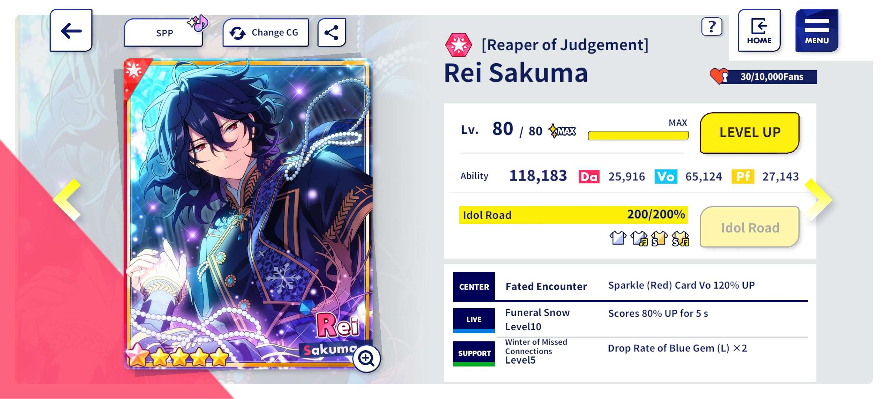

The scout banner for La Mort started today! I reached pity minimum after saving for months (if not at least a full year), and after spending it all I managed to reach 300 pulls and max him out :] I don't usually go this hard for gacha games, but this is my favorite card of all time, so I'm pretty happy about it! Thank you for coming home, Rei. (Now to hopefully scrounge together enough for Ritsu...)
